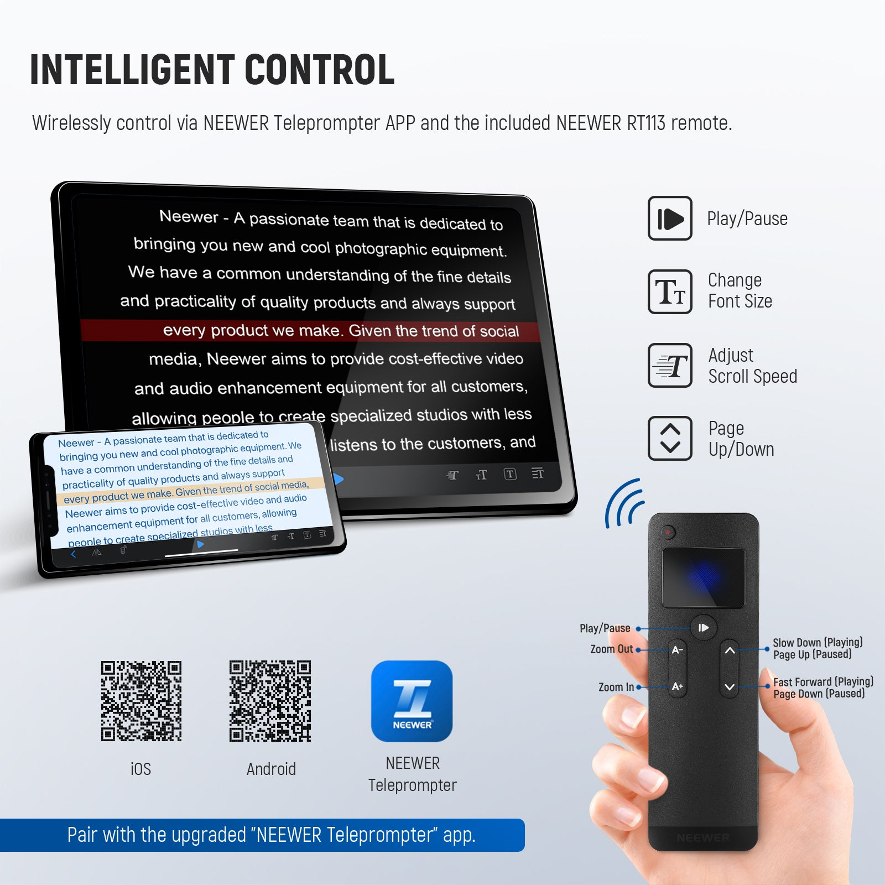

Teleprompter 快问快答：拍视频读稿到底靠不靠得住
做视频录课口播总卡壳？分光镜提词器配 Teleprompter 这套 App，常见问题一篇答完——硬件搭什么、稿子怎么导、遥控器配不上怎么办。
整理一篇关于 Teleprompter 的快问快答——分光镜提词器的配套手机 App，拍口播、做访谈、录课程的人不少在用，但上手前后总有一堆问号。
Teleprompter 是什么，谁用得上？
Teleprompter 是分光镜提词器的官网配套 App，装在手机上，配合一块半透反射玻璃把稿子投射到镜头前方，让你看着镜头说话同时能把台词读出来。做口播视频、录知识课程、直播带货、双人访谈——只要你拍视频时需要读东西又不想低头看稿的场景，都用得上。它的价值很直白：解放眼睛，让视线始终对准镜头。

只装 App 能用吗，一定要买硬件？
App 从下载拿，装上跑起来也行，但那只能叫"滚动字幕"，不是真正的分光镜提词。分光镜的核心是单向透反玻璃：相机从正面拍你，只看到你；你从玻璃里看到反射出来的手机屏幕文字，视线方向就是镜头方向——这才是读稿不穿帮的关键。如果只是把手机放镜头下方看字幕，眼睛往下瞟一下，画面里立刻就露馅了。所以 App 是配套硬件用的，常见搭配是 Neewer 的 X12、X17 II 这些型号。
稿子怎么导进去，还要重新打字吗？
不用。App 支持几种导入方式，最省事的是本地台本导入——手机存储里的 txt 文件、备忘录导出的文本、电脑拷进来的文稿，走"新建文档 → 本地台本导入"就能直接读进来。文件准备上有几个小讲究：纯文本最稳，带复杂格式的文档可能把奇怪的符号和空行一起带进来；导入后先过一眼换行，有些编辑器用特殊换行符，段落会挤成一行；打开全是问号方块的，多半是编码问题，另存为 UTF-8 再导一次就好。稿子太长建议拆成几份，滚动时也更可控。
遥控器是标配吗，不用行不行？
遥控器是随硬件一起给的，常见的型号有 RT110、RT111、RT113 几代，同一款 App 都通吃。不用遥控器也能操作——手指在手机屏幕上划就行，播放/暂停、变速都能点。但用遥控器有两个实打实的好处：双手能空出来做手势或拿道具，拍摄节奏不打断；而且遥控器是蓝牙的，握在手里看不到操作痕迹，画面干净。RT113 这类新型号主打"安静按键"，按下去不会咔哒咔哒响，不会被麦克风收进去。

滚动速度怎么调，调不准怎么办？
速度没有标准答案，按人来。建议方法：先快速滚一遍感受一下，再放慢到能跟上又不拖沓的节奏。双人访谈场景里两个人语速不一样怎么办——取中间值，照顾偏慢的一方。速度调好之后 App 会记住，下次打开同一份稿子自动套用，不用每次重新校。还有一个实用技巧：正式录制前先试滚两三遍，把速度和台词节奏磨到同步，速度校不准时翻一下Teleprompter文档的参数说明，比对着稿子硬念强太多。
双人访谈能不能共用一块提词器？
可以，但得看玻璃尺寸。17 英寸级的宽幅分光镜——比如 X17 II 随附的那块——反射区足够宽，两个人一左一右坐，各自的视线角度都在可视范围内，配 18mm 到 28mm 的广角镜头能把两人中景同时收进去。稿子要按人分段写清楚，A 的问题句和 B 的回答句首尾衔接标好，滚动到接话点时另一人自然接上。如果手上只有小尺寸玻璃（常见的 10 英寸左右），那画面里必有一人读不到字或读到斜字，这时要么两台小提词器各对一人，要么退回"一人看稿一人脱稿"的分工。
蓝牙遥控器配对失败怎么办？
三种典型故障各有解法。配对列表空或一直转圈——先确认遥控器有没有进配对模式（长按开机键到指示灯快闪，只开机不进配对态列表里不会出现），再查手机有没有给 App 开"附近设备"权限，权限被拒时扫描静默失败；都不行就飞行模式开关一次。搜得到但配不上——系统蓝牙设置里先把旧的配对记录取消掉，遥控器是点对点连接，上一台连着的手机先断开；还配不上多半是电池电压不稳，换新电池再试。配对成功但频繁掉线——蓝牙两三米以上、隔墙衰减明显，拍摄位和手机尽量同室无遮挡；直播间这种 Wi-Fi 蓝牙密集的地方先关掉暂不用的无线设备；安卓手机记得把 App 加入电池优化白名单，防止后台被系统杀掉断连。
长时间用有什么坑？
电量是第一大坑。手机屏幕常亮加蓝牙遥控器连着，续航消耗比平时快不少，长时间录最好备个充电宝。第二坑是安卓的后台策略——不少系统会把不活跃的 App 杀掉，滚动播到一半突然停了就是这个原因，一定要把 App 加入电池白名单。第三坑是稿件的换行和编码——看起来是小问题，导进去段落挤成一行或全是乱码，临场改稿全打乱节奏，提前用纯文本编辑器另存为 UTF-8 能省不少麻烦。配套资料和整理好的使用说明在GitHub、Gitee、GitCode 三处都有同步，国内访问哪个顺就用哪个。
最后一句：如果你拍视频时总因为忘词卡壳、低头看稿穿帮，Teleprompter 配一块分光镜是花钱不多见效很快的升级——真正常用的功能就是那几个，蓝牙连好、稿子导对、速度调顺，其他的都是锦上添花。